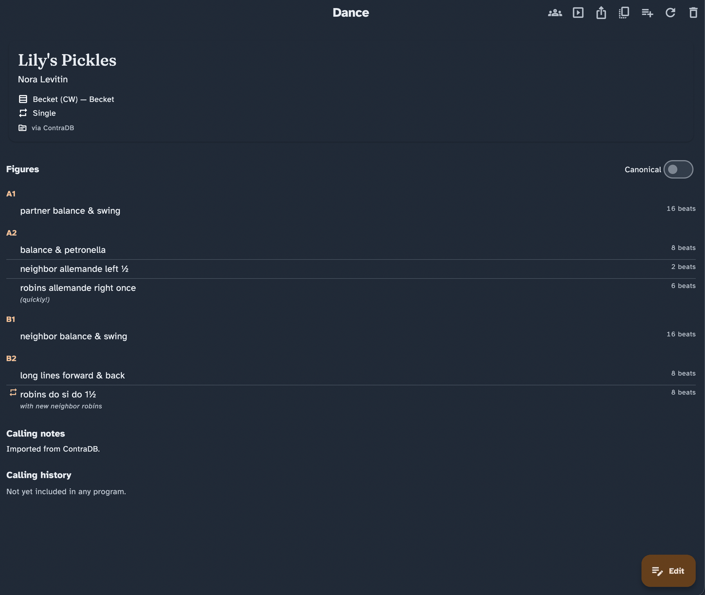

Dialect: put the app in your own words
Every caller has their own words. This guide shows you how to make Caller's Compendium speak yours — choosing the role names and phrasing you use, switching them in a moment, and doing it all without ever changing the dances you have saved.
A dialect is your personal choice of role names and wording — for example Larks/Robins or Leads/Follows — applied everywhere the app shows text. It is your words, your way. Dialects are the heart of Caller's Compendium, so it is worth a few minutes to set yours up the way you like it.
If you are brand new here, start with the getting-started guide first, then come back to make the app sound like you.
Why callers need dialects
Contra has no single vocabulary. One community calls the roles Larks and Robins; another says Leads and Follows; older cards and some regions use other words again. The same is true of moves — one caller's "shoulder round" is another's older term for the very same figure.
That variety is wonderful, but it makes a shared library of dances awkward: if a dance is written down in one caller's words, everyone else has to translate it in their head. Dialects solve this. You keep every dance once, and the app shows it to you in your words — and to the next caller in theirs — without anyone rewriting anything.
The big idea: one library underneath, your words on top
This is the single most important thing to understand, and it makes everything else safe to experiment with.
Under the hood, every dance in your collection is stored in one shared, neutral form. Your dialect is a layer of wording laid on top of that stored dance when the app draws it on screen. Choosing or switching a dialect changes only what you see — it never rewrites the dance itself.
That leads to a distinction worth keeping clear:
- Changing your dialect changes your view. The role names and wording you read on the dance card, in a program, and while calling all update to match. No saved dance is touched.
- Editing a dance changes the dance. That happens only in the dance editor, when you deliberately change a figure, the notes, or the title.
Because the stored form never changes when you switch dialects, three good things follow on their own:
- Search always works, whatever words you prefer. If you search using your own role names or an older term, the app matches it against the shared form for you, so you find the dance either way.
- Your data stays portable. A dance you saved in one dialect opens correctly for someone using another, and your backups never bake in one set of words.
- Nothing is ever lost in translation. Switching between dialects — even repeatedly, even mid-evening — can't corrupt or reword your saved dances.

The dance card in the active dialect, with the toggle that switches to shared canonical wording without changing the saved dance.
The dialects that come built in
Caller's Compendium ships with three ready-to-use dialects. You choose one as your active dialect, and you can add as many of your own as you like.
- Larks/Robins — the modern, role-neutral names, and the app's default. If you do nothing, this is what you see.
- Leads/Follows — another role-neutral choice, ready to pick.
- Canonical — the plain, shared wording the app stores underneath. Handy when you want to see a dance in its neutral form (more on this below).
The built-in dialects are deliberately role-neutral. If your community uses other role names — including traditional gendered ones — you are not stuck: you enter whatever wording you want yourself, in a custom dialect. The next sections show how.
Choose your dialect
- Open Settings and choose the Dialect section.
- In the Dialects list, select the one you want to use. The app switches to it right away, everywhere.
The built-in dialects carry a Preset badge and are read-only, so you can't change their wording by accident. Your own dialects sit below them and can be edited freely.

The Dialect section manages the active dialect and the wording of your own custom dialects.
Make your own dialect
When none of the built-in dialects match your community, make your own. From Settings › Dialect:
- Choose New dialect to start from a clean slate, or
- Choose Duplicate from… to copy an existing dialect (a preset or one of your own) and adjust it. To tweak a built-in dialect, use Duplicate to customize from its menu — this makes an editable copy and leaves the original preset untouched.
Give the dialect a name, then open its term editor to set any of the following. A live preview shows a sample figure re-worded as you type, so you can see the effect immediately.
Role names
Set the words for the two roles — for example Larks and Robins, or your community's own terms. You can enter both the singular and plural forms (the app fills in a sensible plural if you leave it blank). This is also where you would enter traditional or gendered role names if that is what your dancers use.
Reworded moves
Give individual moves the wording you say out loud. If you always call a move by a particular name, set it here and the app will use your wording on every dance that contains that move. For moves that come in left- and right-handed versions, you can include a placeholder so the app fills in "left" or "right" for you rather than making you write two versions.
Move wording templates
For a complete sentence around a move, add a display template and use the slots shown in the editor, such as {who} and {move}. Legacy templates may omit available slots, but the editor will ask you to confirm before saving one. Templates with invalid syntax or more than 512 characters must be fixed before the dialect can be saved.
Some moves have parameter-dependent choreography. The editor provides separate templates for each supported branch of a long wave, promenade, or circle, and shows the exact slots that branch can use. Complete every listed slot: an incomplete conditional template is ignored and the normal wording is shown, so a single-file prefix or a dancer's in/out instruction can never disappear. Older single-template wordings remain available for their ordinary/default branch only; they are not reused for a different parameter branch.
Dancer wording
Reword the way the app refers to who is dancing — for example the words for "neighbors" or "the next couple" — to match how you phrase things from the stage.
Discouraged terms
Each dialect keeps a list of words you would rather not use. When you type one of these while writing a dance, the editor gently flags it (it shows the word struck through) so you can reconsider — but it never blocks you or changes your text. The list ships with some common examples and is yours to edit, add to, or clear.
The app watches for clashes. If two different things would end up with the exact same wording, the editor warns you right away, because that would make it impossible to tell them apart later. Adjust one of the words and the warning clears. You can't save a dialect with an unresolved clash.
Switch dialect on the fly
You don't have to visit Settings every time. On the dance card and in Perform mode there is a quick-switch control — a group-of-people icon — that changes your active dialect instantly.
Choose it, pick a dialect from the list, and the whole app re-reads in those words at once. This is built for real evenings: guest-calling for a community that uses different role names, or switching wording between gigs, takes a moment and leaves every saved dance exactly as it was.
Remember the distinction: the quick-switch changes how dances read for you, not the dances themselves. Switch as often as you like.
Peek at the canonical wording
Sometimes you want to see a dance in the plain, shared wording — to compare notes with another caller, or to double-check what a figure really is underneath your own phrasing.
On the dance card and in Perform mode, the Show canonical terms control (shown as a Canonical switch on the dance card) flips the current view between your dialect and the shared canonical wording. It changes only what is on screen right then — it doesn't change your active dialect or touch the saved dance. When your active dialect is already Canonical, the toggle isn't shown, because there would be nothing to switch between.
This pairs naturally with Perform mode: you can call from your own words and, if a dancer or another caller asks, flip to the canonical wording for a moment without losing your place. See the Perform mode guide for the full calling view.
Set your defaults
Two settings decide what you see before you touch anything:
- Your active dialect (in Settings › Dialect) is the wording every screen uses by default.
- Open dance details in canonical terms (in Settings › Defaults, under Display defaults) decides whether a dance opens showing your dialect or the shared canonical wording. Leave it off to always open in your own words; turn it on if you prefer to start from the neutral wording. Either way, the on-screen toggle still lets you switch a dance while it is open.
For a full tour of everything under Settings, see the Settings guide.
Practical scenarios
Guest-calling for another community. You usually call Larks/Robins, but tonight's crowd says Leads/Follows. Before you start, open the quick-switch on the dance card or in Perform and choose Leads/Follows. Every dance now reads in that community's words. Afterwards, switch back — none of your dances changed.
Your community's own words. Your dancers use role names that aren't built in. Make a custom dialect once (Settings › Dialect › New dialect), enter your role names and any moves you say differently, and set it active. From then on the whole app speaks your language.
Bringing in dances written in older words. When you import dances, or open older cards, they may use terms that have since fallen out of use. The app quietly understands the common older words and matches them to the shared form, so those dances still appear in your dialect and still turn up in search — no clean-up required.
Comparing a figure with another caller. Mid-conversation, flip Show canonical terms on the dance card to read the dance in neutral wording you both recognise, then flip back to your own.
Good to know
- Printing and sharing. A dance you print or export is written in your active dialect, so what you hand someone matches how you both speak. Note that the on-screen Show canonical terms toggle changes only what you are looking at — it doesn't change what an export contains. To export in different words, switch your active dialect first. See Share, print & export.
- Screen readers. The app reads dances aloud in your dialect too — your own words are the clearest ones for you — so the spoken view and the visible view stay in step. See the accessibility guide for more.
- It's all on your device. Dialects, like everything in Caller's Compendium, live only on your device. There is no account and nothing to sync.
Where to go next
- Getting started — find your way around the app.
- Perform mode — call live, with the dialect and canonical controls close at hand.
- Settings — where the dialect manager and display defaults live.
- Collection & search — searching works whatever dialect you use.
- Imports & migration — bring in dances written in other words.
- Share, print & export — which words leave the app with a dance.
- Glossary — plain definitions of the terms used here.